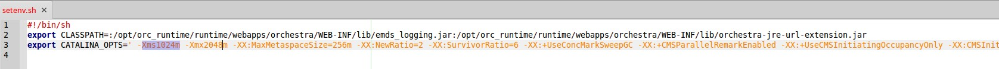

Tomcat

Topic content
In order to use Orchestra you have to install Apache Tomcat on your system. In this version we recommend Apache Tomcat 8.
|
Please Change the standard password of the tomcat administrator to an individual password given by your own. This is essential to prevent security attacks. |
|
Please refer to chapter Firewall Settings. In this chapter the configuration for "https"-Only access to the tomcat server is described. This is essential to prevent security attacks. |
You can download it at: http://tomcat.apache.org/download-80.cgi
After the download you have to unzip the file by using the following command:
tar -xzf apache-tomcat-8.5.11.tar.gz
Now move the new folder to the target path you want to:
mv apache-tomcat-8.5.11 /opt
After setting up the permissions you are able to start Tomcat for testing purpose with the following command:
$TOMCAT/bin/startup.sh
If the server is up and running you can test it by calling
localhost:8080 with your browser
At the end you can shutdown the server by:
$TOMCAT/shutdown.sh
With APT
For the installation with the Advanced Packaging Tool you have to start with the command:
apt-get -y install tomcat8 tomcat8-admin tomcat8-examples tomcat8-docs
After that you have to add a user to the tomcat-users.xml by opening the file with:
sudo nano /var/lib/tomcat8/conf/tomcat-users.xml
now insert the following into the <users> </users> tag:
--> insert: <user username="admin" password="admin" roles="manager-gui,admin-gui"/>
In the next step you have to add the following jar-files to the default "CLASSPATH":
•<tomcat installation directory>\webapps\orchestra\WEB-INF\lib\orchestra-jre-url-extension.jar
•<tomcat installation directory>\webapps\orchestra\WEB-INF\lib\emds_logging.jar
The shell script catalina.sh is looking for a configuration file setenv.sh.
Create the file <tomcat>/bin/setenv.sh and fill it with this lines:

Furthermore the java options have to be adjusted (CATALINA_OPTS).
Also the memory options should be adjusted. 'Initial memory pool' stands for the initial RAM at the start of Tomcat. When the memory consumption gets bigger the used memory increases, till the value on 'maximum memory pool' is reached. Please set the values to the following default values:
Initial memory pool: -Xms1024m (=1GB)
Max memory pool: -Xmx2048m (=2GB)
Recommended Java Options for Java 8:
-XX:MaxMetaspaceSize=1024m
-XX:NewRatio=2
-XX:SurvivorRatio=6
-XX:+UseConcMarkSweepGC
-XX:+CMSParallelRemarkEnabled
-XX:+UseCMSInitiatingOccupancyOnly
-XX:CMSInitiatingOccupancyFraction=75
-XX:+ScavengeBeforeFullGC
-XX:+CMSScavengeBeforeRemark
-XX:+CMSClassUnloadingEnabled
-XX:+UseCodeCacheFlushing
-Dsun.net.inetaddr.ttl=300
-XX:+HeapDumpOnOutOfMemoryError
-XX:HeapDumpPath=<path where a heap dump is written in case of a out of memory error>
In cases where the orchestra support has to do a detailed diagnosis of an orchestra system, it is useful to allow the access to the virtual machine by Visual VM (Profiler). This access can be enabled with the following parameters:
Debug options for Visual VM
-Dcom.sun.management.jmxremote
-Dcom.sun.management.jmxremote.port=8099
-Dcom.sun.management.jmxremote.ssl=false
-Dcom.sun.management.jmxremote.authenticate=false
A detailed description of the configuration of this debugging options (including security options) can be found at Java Management Console